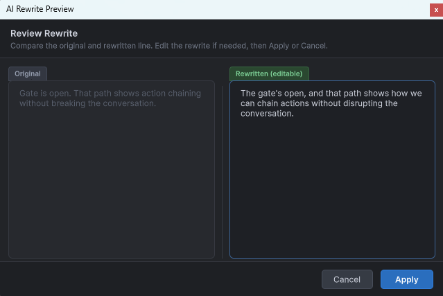

AI Extension
The optional AI extension provides command-based authoring assistance inside the graph editor. It proposes targeted, preview-first changes — rewrites, line insertions, action insertions — that you confirm before they are applied. It does not expose a raw full-graph generation or import workflow in the shipped release.
Key files
AiGraphCommandExecutor.cs— coordinates parse → validate → route → delegateAiInstructionRouter.cs— maps free-text instructions to command typesAiCommandSafetyValidator.cs— rejects any AI response containing GUIDs, positions, or edge definitionsAiJsonSanitizer.cs— strips markdown fences and fixes LLM encoding artifactsLlmProviderDefinitionBase.csand providers
Draft-first pipeline
User instruction (free text)
-> AiInstructionRouter (route + anchor resolve)
-> AiPromptBuilder
-> LLM Provider (HTTP)
-> AiJsonSanitizer
-> AiCommandSafetyValidator
-> AiDraftResponseParser
-> Preview window (human review)
-- confirm -->
-> DialogGraphMutationService (create nodes / edges / GUIDs)Ownership boundaries
The AI layer may only return rewritten text, draft dialog line content, draft action references, and draft choice content. The core graph layer exclusively owns GUIDs, node positions, edges, graph serialisation, and undo records. Any AI response that includes forbidden fields is rejected by AiCommandSafetyValidator before the graph is touched.
Provider model
The provider abstraction is LlmProviderDefinitionBase, with concrete providers for OpenAI-style chat completions, Gemini, Ollama, and custom JSON APIs.
Shipped provider assets are templates only. For OpenAI-compatible services, prefer a root baseUrl plus /v1/chat/completions in chatEndpoint.
Editor entry point
Open any DialogGraph asset in the graph editor and select the AI tab in the right sidebar.
Safety and recovery
AiJsonSanitizer handles common LLM formatting issues such as markdown fences and stray prose. If a response is recovered from malformed output, a warning banner appears in the preview — review the draft carefully before confirming.
AI tab in the graph editor sidebar

Best visual for the command input and draft preview flow.
Draft preview window

Shows the proposed change before it is applied to the graph.
Context sidebar

Scene summary, world context, and tone inputs fed to the AI provider alongside each command.
Branch review panel

Proposed branch additions shown for review before being committed to the graph.